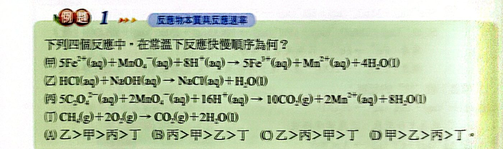
看答案與詳解收起
答(A)
解
乙（中和）＞ 甲（只有電子轉移的氧化還原）＞ 丙（要斷 C−C 鍵）＞ 丁（燃燒）
化學反應有鍵的破壞與生成，而化學鍵的特性取決於物質本質，所以反應物的本質會影響速率。
室溫下的一般法則
1. 不涉及鍵破壞的反應較快：H＋ ＋ OH− → H2O；Ag＋ ＋ Cl− → AgCl(s)
2. 涉及共價鍵破壞愈多的反應愈慢：
- 5Fe2＋ ＋ MnO4− ＋ 8H＋ → …（快）：Fe2＋ → Fe3＋ 只有電子轉移
- 5C2O42− ＋ 2MnO4− ＋ 16H＋ → 10CO2 ＋ …（慢）：還要打斷 C−C 鍵
常溫下較快的反應
1. H＋ ＋ OH− → H2O：中和，極快
2. Ag＋ ＋ Cl− → AgCl(s)：沉澱，快（離子要排成晶格，比中和略慢）
3. Cu2＋ ＋ 4NH3 → Cu(NH3)42＋：錯離子只形成鍵，快
4. Ce4＋ ＋ Fe2＋ → Ce3＋ ＋ Fe3＋：只有電子轉移（兩者互斥，比中和慢）
5. 5Fe2＋ ＋ MnO4− ＋ 8H＋ → 5Fe3＋ ＋ Mn2＋ ＋ 4H2O
6. P4(s) ＋ 5O2 → P4O10：白磷很不安定，燃燒活化能低
7. 2NO ＋ O2 → 2NO2：常溫約 7～8 秒完成
8. H2 ＋ F2 → 2HF：室溫暗處也會爆炸
9. HCl(g) ＋ NH3(g) → NH4Cl(s)
常溫下較慢的反應
1. 有機反應（如酯化）：要破壞較多共價鍵，活化能較高。
2. 燃燒反應（如 CH4 ＋ 2O2）：破壞多個強共價鍵，常溫幾乎不反應。
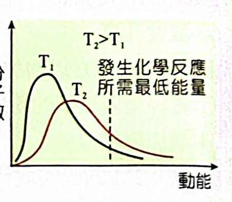
| 可改變 | 不可改變 |
|---|---|
| 分子動能分布曲線 | 活化能 |
| 反應熱 | 反應途徑（反應機構） |
| 正、逆反應速率（不等量改變） | |
| 正、逆反應速率常數（不等量改變） | |
| 化學平衡、平衡常數 |

乙（中和）＞ 甲（只有電子轉移的氧化還原）＞ 丙（要斷 C−C 鍵）＞ 丁（燃燒）
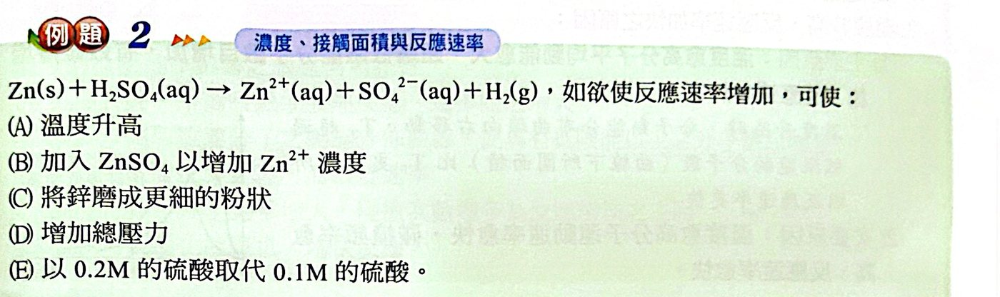
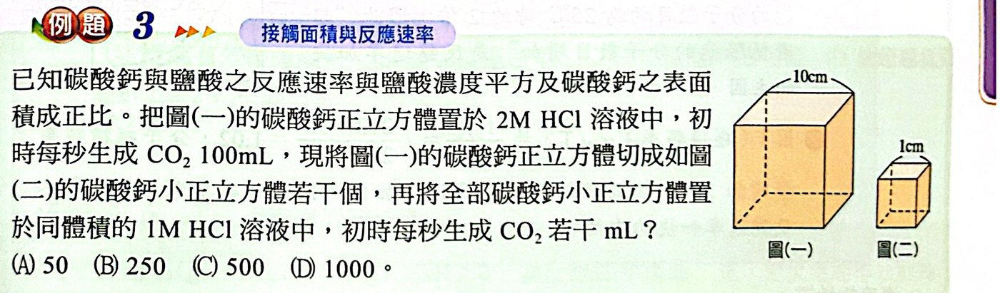
10 cm 正方體切成 1 cm 小正方體：n ＝ 10，總表面積 ×10
HCl 2 M → 1 M：速率 ∝ [HCl]2，×1/4
100 × 10 × 1/4 ＝ 250 mL/s
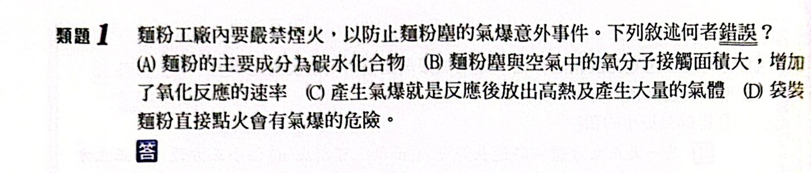
粉塵氣爆是因為粉塵飄散在空氣中，接觸面積極大，燃燒速率極快。
袋裝麵粉接觸面積小，直接點火只會慢慢燒，不會氣爆 ⇒ (D) 錯誤。
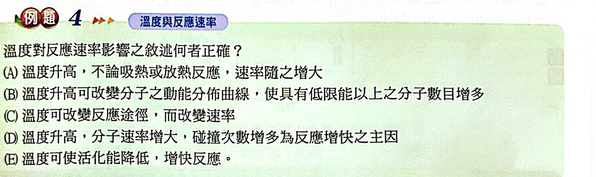
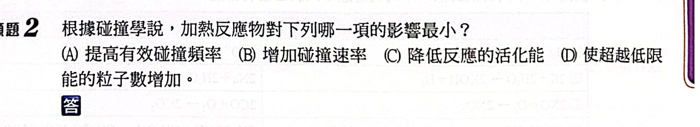
加熱不會降低活化能（降低活化能是催化劑的作用）。
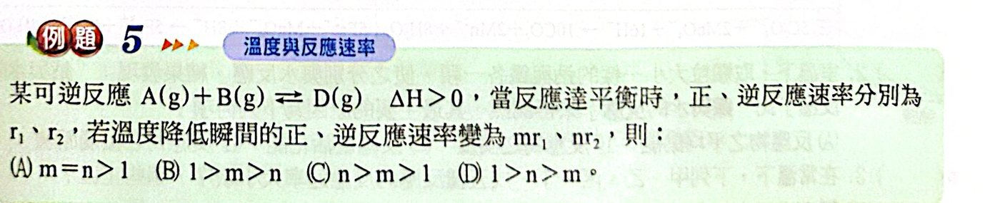
ΔH ＞ 0 ⇒ 正反應活化能 ＞ 逆反應活化能 ⇒ 正反應受溫度影響較大。
降溫：兩者都變慢，正反應變慢更多 ⇒ 1 ＞ n ＞ m
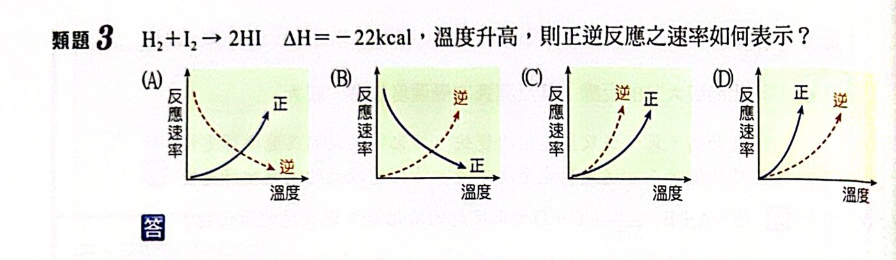
升溫時正、逆反應速率都增加（排除 A、B）。
ΔH ＜ 0 ⇒ 逆反應活化能較大，逆反應速率增加得較快 ⇒ 逆反應曲線較陡 ⇒ (C)。
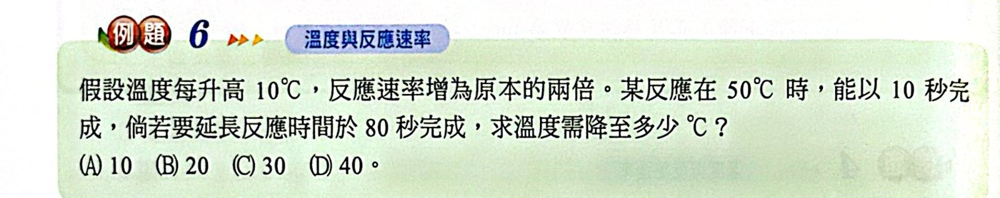
時間 10 s → 80 s，速率變為 1/8 ＝ (1/2)3 ⇒ 降低 30 ℃ ⇒ 20 ℃
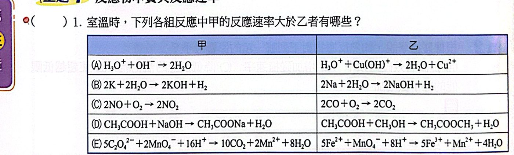
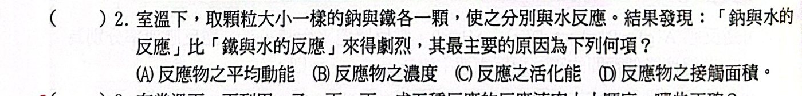
顆粒大小相同、溫度相同，差別在反應物本質 ⇒ 反應的活化能不同。
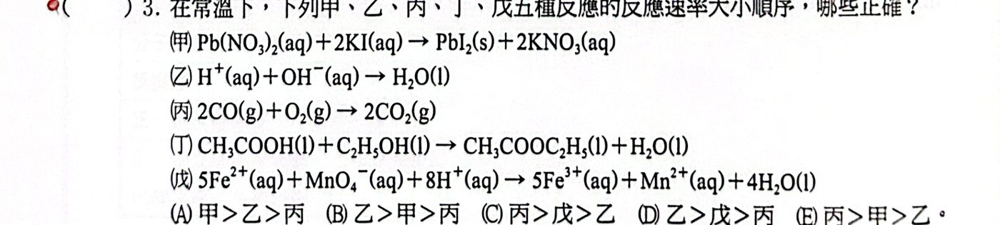
乙（中和）＞ 甲（沉澱）＞ 戊（氧化還原）＞ 丁（有機）＞ 丙（燃燒）
符合的是 (B) 乙 ＞ 甲 ＞ 丙、(D) 乙 ＞ 戊 ＞ 丙。
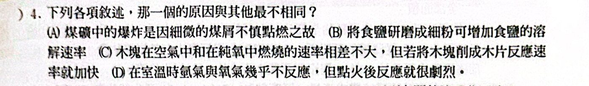
(A)(B)(C) 都是接觸面積的影響；(D) 點火是提供能量克服活化能（溫度的影響）。
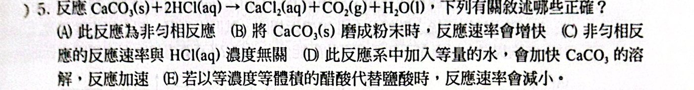
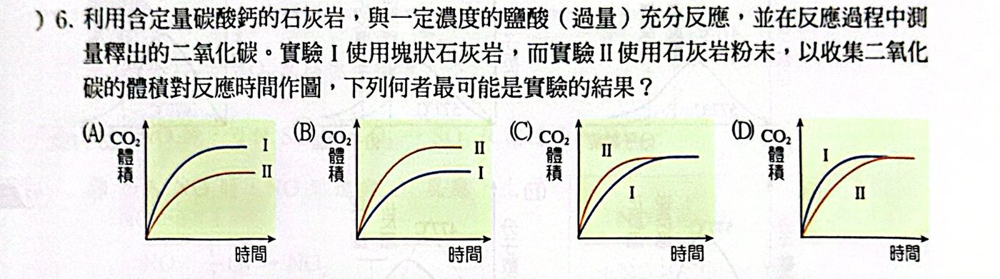
粉末（II）接觸面積大、反應較快，曲線較早上升；碳酸鈣定量、鹽酸過量 ⇒ 最後 CO2 總量相同 ⇒ (C)。
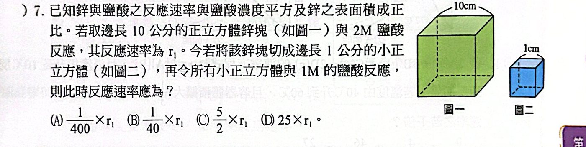
表面積 ×10，[HCl] 2 → 1 M 使速率 ×1/4 ⇒ ×10/4 ＝ 5/2 × r1
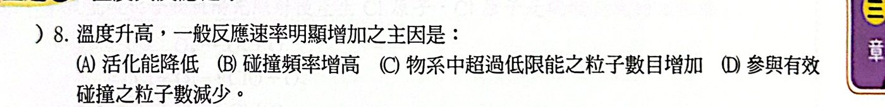
主因是超過低限能的粒子數增加。
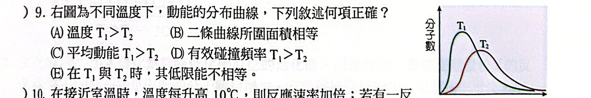
T2 曲線較扁、往右 ⇒ T2 ＞ T1。
- (A)(C)(D) ✗ 都應是 T2 較大
- (B) ○ 分子總數相同，曲線下面積相等
- (E) ✗ 低限能與溫度無關
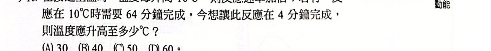
64 分 → 4 分，速率 ×16 ＝ 24 ⇒ 升高 40 ℃ ⇒ 50 ℃
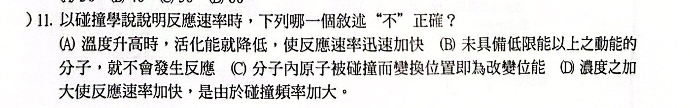
溫度升高不會降低活化能。
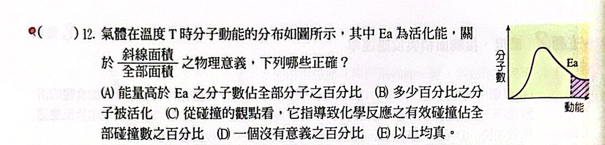
斜線面積 ÷ 全部面積 ＝ 能量超過 Ea 的分子比例 ＝ 被活化的分子百分比 ＝ 有效碰撞占全部碰撞的比例（不考慮位向）。
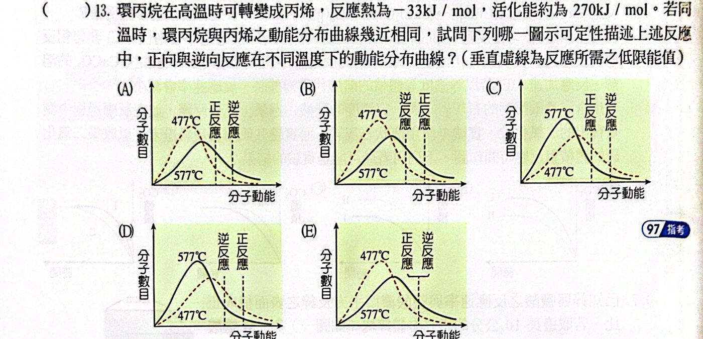
判斷重點：
1. 溫度高（577 ℃）的曲線較扁、峰值往右；溫度低（477 ℃）的較高、較窄 ⇒ 排除 (C)(D)。
2. 放熱反應：逆反應活化能（270 ＋ 33 ＝ 303）＞ 正反應（270）⇒ 逆反應的低限能在右邊 ⇒ 排除 (B)(D)。
3. 活化能高達 270 kJ/mol，遠大於分子平均動能，低限能應落在曲線最右邊的尾端（只有極少數分子超過）⇒ (E)。
（(A) 的虛線切在曲線中段，代表大部分分子都能反應，不合理。）
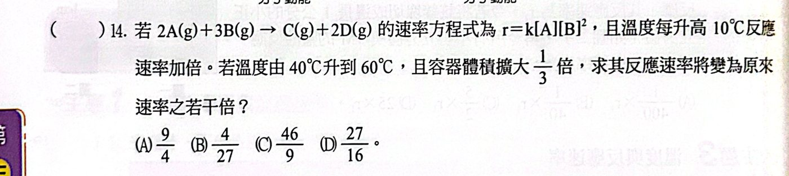
升溫 20 ℃：×22 ＝ 4
體積擴大 1/3 倍（變為 4/3 V）：濃度 ×3/4，r ＝ k[A][B]2 為 3 級 ⇒ ×(3/4)3 ＝ 27/64
4 × 27/64 ＝ 27/16